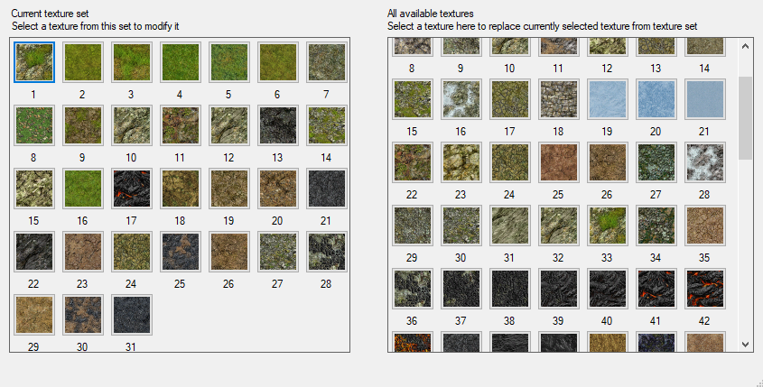
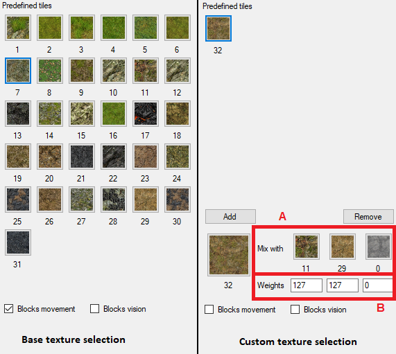

After you're done modifying terrain, you need to paint it. In this mode, you can paint the terrain using a set of base textures, create custom textures, adjust base texture set, and more.
To paint the terrain, adjust brush settings (see Map Editor - Terrain mode for brush details), select the texture from Texture Selection panel, and then hold left mouse button and drag the mouse over the terrain you want to paint.
In addition, if Shift is held while left mouse button is pressed, the currently selected texture will be applied to
Using right mouse button you can select texture to paint with from under the 3D cursor.
Modify texture set button brings up a window in which you can select base textures that your map uses. Every map is limited to 31 base textures (excluding base texture).
When you enter Textures mode, Texture Selection panel appears on the right of the view panel, depending on Tile type selected in tool panel.
In either case, selecting a texture from the panel allows you to paint the terrain with it.
Also in either case, you can choose whether the texture acts as a movement flag and/or a vision flag.
In this panel, you can create additional textures, which are mixtures of existing textures. Select a texture from this panel to enable editing the texture.